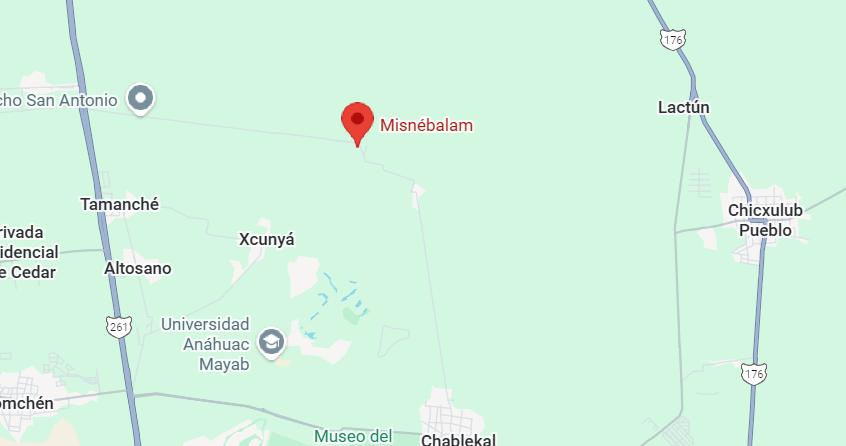

antigua hacienda ubicada en las afueras de Mérida, Yucatán. Construida en el siglo XIX durante el auge henequenero, funcionó como espacio agrícola y punto de producción de henequén. Con el paso del tiempo fue abandonada, lo que le dio su aspecto misterioso y la fama de ser un “pueblo fantasma”. Sus ruinas, corredores y viejos muros reflejan la historia de las haciendas yucatecas y el paso del esplendor al olvido. Hoy es un sitio popular para exploradores urbanos y visitantes que buscan conocer lugares históricos con un toque de misterio.
Ubicación |
Información Esencial
|